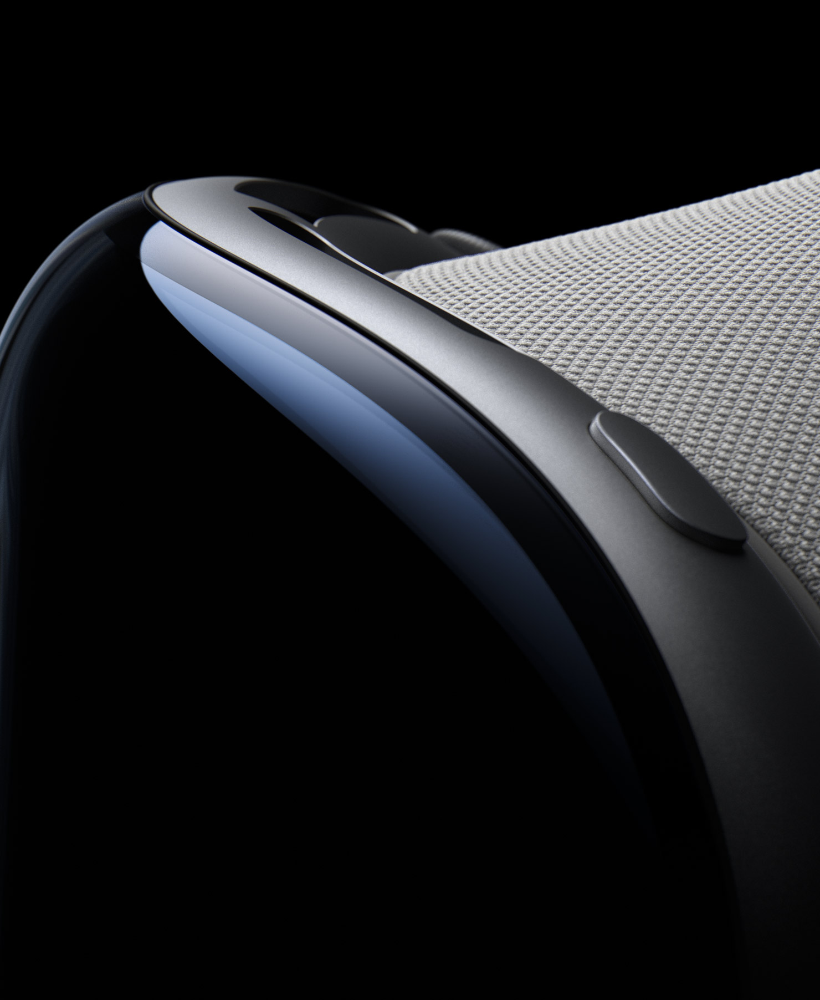
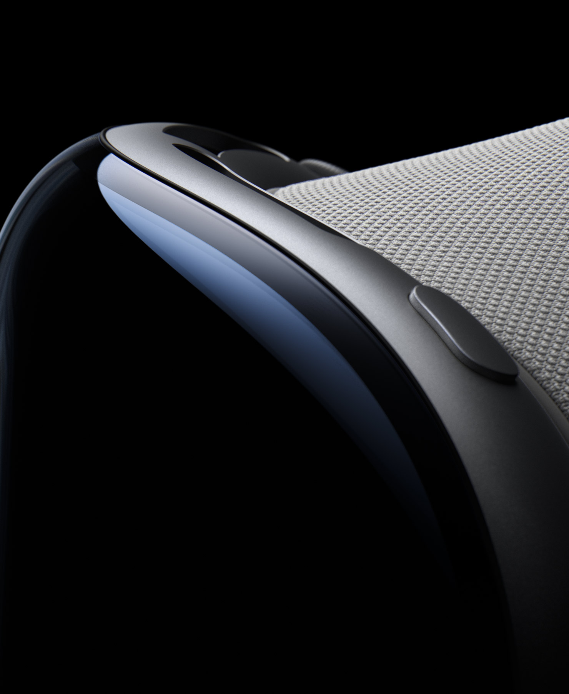

Introducing
Welcome to the era of spatial computing.
Apple Vision Pro seamlessly blends digital
content with your physical space.
You navigate simply by using your
eyes, hands, and voice.
So you can do the things you love
in ways never before possible.
You've never seen everything like this before.
Available early next year in the U.S.
Apps
Free your desktop.
And your apps will follow.
Your apps live in
your space.
With Apple Vision Pro, you have an infinite canvas that
transforms how you use the apps you love. Arrange apps
anywhere and scale them to the perfect size, making the
workspace of your dreams a reality — all while staying
present in the world around you. Browse the web in Safari,
create a to-do list in Notes, chat in Messages, and
seamlessly move between them with a glance.
Entertainment
The ultimate theater.
Wherever you are.
Your apps live in
your space.
Apple Vision Pro can transform any room into your own
personal theater. Expand your movies, shows, and games up
to the perfect size while feeling like you’re part of the action
with Spatial Audio. And with more pixels than a 4K TV for
each eye, you can enjoy stunning content wherever you are
— whether that’s a long flight or the couch at home.
Photos and Videos
Be in the moment.
All over again.
Your memories
come alive.
Apple Vision Pro is Apple’s first 3D camera. You can capture
magical spatial photos and spatial videos in 3D, then relive
those cherished moments like never before with immersive
Spatial Audio. Your existing library of photos and videos
looks incredible at remarkable scale. And panoramas wrap
around you — making you feel like you’re standing right
where you took them. You can also take spatial videos with
iPhone 15 Pro, then view them on Apple Vision Pro.*s
Connection
Get on the same page.
In the same space.
Make meetings more
meaningful.
Apple Vision Pro makes it easy to collaborate and connect
wherever you are. FaceTime video tiles are life-size, and as
new people join, the call simply expands in your room. Within
FaceTime, you can also use apps to collaborate with
colleagues on the same documents simultaneously.
Design
Designed by Apple.
Apple Vision Pro is the result of decades of experience designing
high‑performance, mobile, and wearable devices — culminating in
new people join, the call simply expands in your room. Within
FaceTime, you can also use apps to collaborate with
colleagues on the same documents simultaneously.
Enclosure.
A singular piece of three-dimensionally formed laminated glass flows into an aluminum alloy frame that curves to wrap around your face.Light Seal.
The Light Seal gently flexes to conform to your face, delivering a precise fit while blocking out stray light.
Head Band.
The Head Band provides cushioning, breathability, and stretch. The Fit Dial lets you adjust Apple Vision Pro precisely to your head.
Power.
The external battery supports up to 2 hours of use, and all‑day use when plugged in.1
Sound.
Speakers positioned close to your ears deliver rich Spatial Audio while keeping you aware of your surroundings.
EyeSight.
An outward display reveals your eyes while wearing Apple Vision Pro, letting others know when you are using apps or fully immersed.
 

A singular piece of three-dimensionally formed laminated glass acts as an optical surface for the cameras and sensors that view the world. It flows seamlessly into a custom aluminum alloy frame that gently curves to wrap around your face while serving as an attachment point for the Light Seal.
visionOS
Apple’s first spatial
operating system.
Interaction designed
for spatial computing.
Built on the foundation of macOS, iOS, and iPadOS, visionOS
enables powerful spatial experiences. Control
Apple Vision Pro with your eyes, hands, and voice —
interactions feel intuitive and magical. Simply look at an
element, tap your fingers together to select, and use the
virtual keyboard or dictation to type.


Apps leap into life.
In visionOS, apps can fill the space around you, beyond the
boundaries of a display. They can be moved anywhere,
scaled to the perfect size, react to the lighting in your room,
and even cast shadows.

Expand your
surroundings.
Environments let you transform the space around you, so
apps can extend beyond the dimensions of your room.
Choose from a selection of beautiful landscapes, or
magically replace your ceiling with a clear, open sky. The
Digital Crown gives you full control over how immersed
you are.
Stay connected to
people around you.
Apple Vision Pro helps you remain connected to those
around you. EyeSight reveals your eyes and lets those
nearby know when you’re using apps or fully immersed in an
experience. When someone approaches, Apple Vision Pro
simultaneously lets you see the person and reveals your
eyes to them.
Technology
Innovation you can
see, hear, and feel.
Pushing boundaries from the inside out. Spatial experiences on
Apple Vision Pro are only possible through groundbreaking Apple
technology. Displays the size of a postage stamp that deliver more pixels
than a 4K TV to each eye. Incredible advances in Spatial Audio. A
revolutionary dual‑chip design featuring custom Apple silicon. A
sophisticated array of cameras and sensors. All the elements work together
to create an unprecedented experience you have to see to believe.
More pixels than a 4K TV. For each eye.
The custom micro‑OLED display system features 23 million pixels,
delivering stunning resolution and colors. And a specially designed
three‑element lens creates the feeling of a display that’s everywhere
you look.
Our most advanced
Spatial Audio system ever.
Dual-driver audio pods positioned next to
each ear deliver personalized sound while
letting you hear what’s around you.
Spatial Audio makes sounds feel like
they’re coming from your surroundings.
Audio ray tracing analyzes your room’s
acoustic properties to adapt and match
sound
to your space. And if you want to use
headphones with Apple Vision Pro, the new
AirPods Pro (2nd generation) with USB‑C
offer the perfect experience, featuring
Lossless Audio with ultra-low latency
enabled by the H2 chip in both devices.

Responsive, precision eye tracking.
A high-performance eye tracking system of LEDs and infrared
cameras projects invisible light patterns onto each eye. This
advanced system provides ultraprecise input without your needing to
hold any controllers, so you can accurately select elements just by
looking at them.
A sophisticated sensor array.
A pair of high-resolution cameras transmit over one billion pixels per
second to the displays so you can see the world around you clearly.
The system also helps deliver precise head and hand tracking and
real‑time 3D mapping, all while understanding your hand gestures
from a wide range of positions.

Revolutionary dual‑chip
performance.
A unique dual‑chip design enables the spatial experiences on
Apple Vision Pro. The powerful M2 chip simultaneously runs
visionOS, executes advanced computer vision algorithms, and
delivers stunning graphics, all with incredible efficiency. And the
brand-new R1 chip is specifically dedicated to process input from the
cameras, sensors, and microphones, streaming images to the
displays within 12 milliseconds — for a virtually lag-free, real-time
view of the world.
Privacy and Security
When it comes to privacy,
we don’t blink.
Privacy and security built in. Like every Apple product and service,
Apple Vision Pro was designed to help protect your privacy and keep
you in control of your data. It builds on the foundation of existing
Apple privacy and security features with new technologies like
Optic ID, a secure
authentication system that uses the uniqueness of
your iris.
Use AR to view
Apple Vision Pro.
Open this page using Safari on
your iPhone or iPad.
.jpg)
An all‑new platform.
An all‑new world for developers.
The possibilities for what developers can dream up and build for Apple Vision Pro are
endless. And with familiar tools and frameworks like Xcode, SwiftUI, RealityKit, and ARKit,
as well as support for Unity and the new 3D-content preparation app Reality Composer
Pro, developers have everything they need to create amazing spatial experiences.
Learn more about developing for Apple Vision Pro >
* Available later this year on iPhone 15 Pro.
1. Testing conducted by Apple in May 2023 using preproduction Apple Vision Pro units and
software. Testing consisted of full battery discharge while performing each of the
following tasks: video playback, internet browsing, spatial video capture, and FaceTime.
Video playback tested in conjunction with an Environment, using 2D movie content
purchased from the Apple TV app. Internet browsing tested using 20 popular websites.
FaceTime tested between two Apple Vision Pro units with Personas enabled. Tested
with Wi-Fi associated to a network. Battery life depends on device settings, usage, network,
environmental conditions, and many other factors. Battery tests are
conducted using specific Apple Vision Pro units; actual results may vary.
2. Valid prescription required. Not all prescriptions are supported. Vision correction accessories are sold separately.
© 2023 TAKE-TWO INTERACTIVE SOFTWARE INC. All Rights Reserved.
© 2023 NBA Properties, Inc. All Rights Reserved. Officially Licensed Product of the National Basketball Association.
A subscription may be required for some services. Not all content may be available in all areas.
Everything Everywhere All At Once © 2022 A24 Distribution, LLC. All rights reserved.
Avatar: The Way of Water © 2022 20th Century Studios and TSG Entertainment Finance LLC.
Users must be 13 years or older.
Available early next year on apple.com and at Apple retail stores in the U.S.
This device has not been authorized as required by the rules of the Federal Communications
Commission. This device is not, and may not be, offered for sale or lease, or sold or
leased, until authorization is obtained.